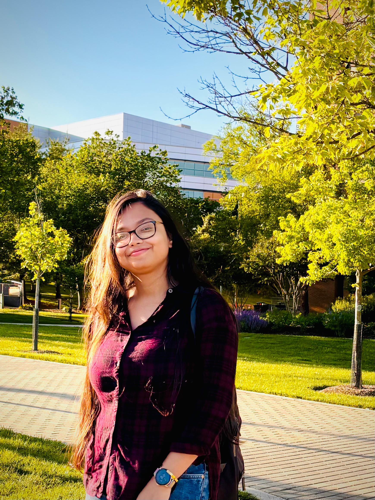

I am a second-year Doctoral student in Statistics at the Department of Mathematics and Statistics, University of Maryland, Baltimore County (UMBC). Currently, I am working under the supervision of Dr. Snigdhanshu (Ansu) Chatterjee, focusing on the equation discovery of stochastic dynamical systems.
Before joining UMBC, I earned my Master of Science (M.Sc) in Statistics from the Department of Mathematics & Statistics, Indian Institute of Technology (IIT), Kanpur. During my time at IIT Kanpur, I gained significant research experience working under the guidance of Dr. Dootika Vats , where I focused on Bayesian Phylogenetic Tree inference and high-dimensional prediction models. Precedingly, I obtained my Bachelor of Science (B.Sc) in Statistics Honours from the University of Calcutta.